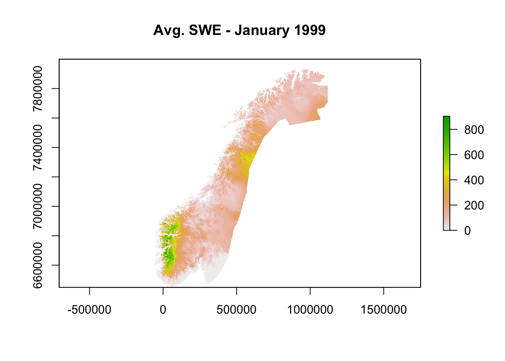
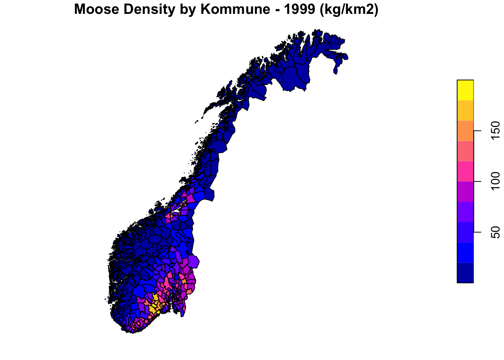
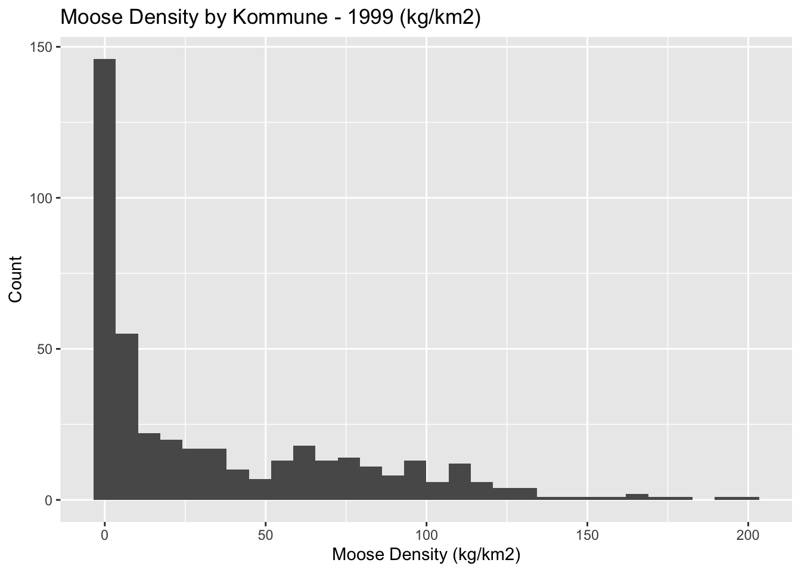
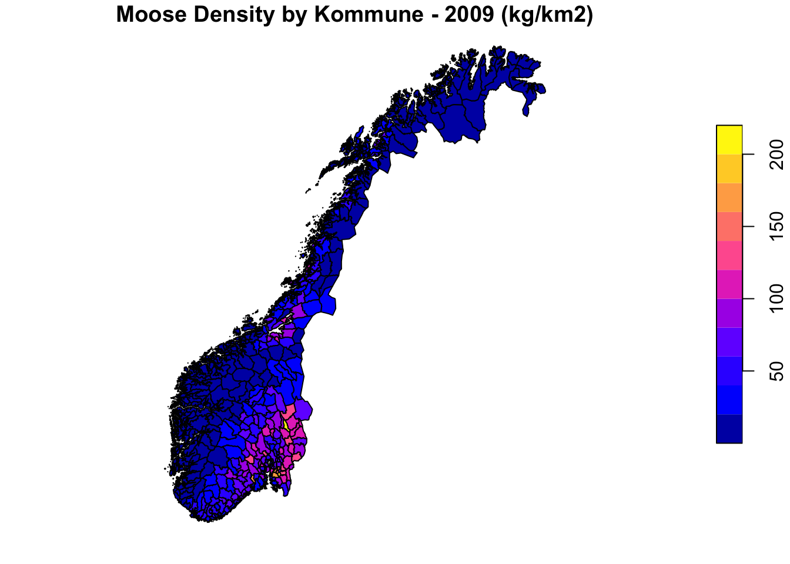
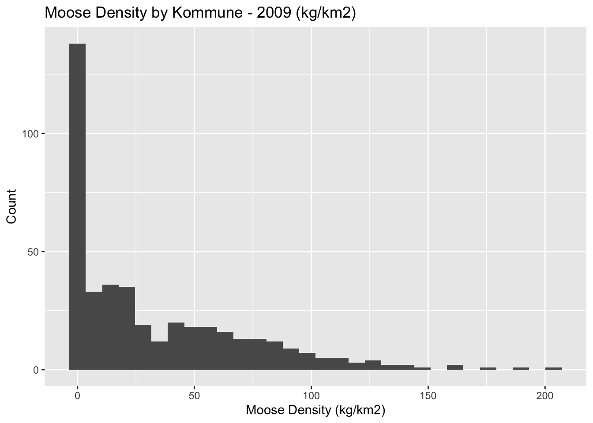

SatSkog Approach
Overview
This report contains a summary of the 'SatSkog' approach, which uses a variety of spatial data to investigate the relationship between moose density and surface albedo in Norway.

Data
Description
SatSkog Data Product
I decided to use NIBIO's SatSkog spatial forest data product for this analysis. NIBIO offers other (more recent) forest data products, but SatSkog is the only one in which the relative proportion of each major tree species (pine, spruce, and birch) is provided. These proportions are necessary to calculate "composite albedo" values (as described in other reports for this project) from the species-specific albedo values provided by the model developed by Hu et al. (2018). Additionally, SatSkog was the data product on which the model developed by Hu et al. (2018) was trained.
SatSkog uses satellite photos and automated photogrammetric analysis to produce estimates for various forest parameters across Norway. The algorithms used in this photogrammetric analysis were developed and calibrated on field data from long-term forest plots managed by the Norwegian NFI. A majority of the satellite photos on which the SatSkog product is based upon were taken in 1999, but some regions of Norway were also photographed in 2007.
NIBIO provides an individual shapefile (with associated data) for each kommune in Norway. Contained within each shapefile is a number of polygons, each of which represents a plot of forest with associated parameters. I included all available shapefiles from NIBIO in my analysis, which totaled to 342 kommunes in Norway.
More detailed information regarding the use and processing of SatSkog data in this approach is described below.
seNorge Climate Data
The albedo model developed by Hu et al. (2018) accepts two climate parameters: (1) monthly average snow-water equivalent (mm) and (2) monthly average temperature (K). seNorge provides this data across the entire country of Norway in the form of spatially-gridded daily estimates with a 1km2 resolution. I was able to obtain (very) large netCDF files with this gridded climate data across all of Norway for years of interest. I processed this data and created RasterBricks (with 12 layers of spatial data - 1 layer for each month) for each year of available seNorge data. Each layer contains spatially-gridded cells (1km2 resolution) with monthly averages of SWE (mm) and temperature (K).
The data is too large to fully present here, but I've provided an example of what a single month (January 1999) of plotted SWE data looks like (when using the raster package):

Herbivore Densities
Densities of various herbivores may have important effects on vegetation states within forest ecosystems, and therefore, it is likely prudent to control for relevant herbivore densities in our final analysis. In addition to forest species (such as moose, red deer, and roe deer), there are a number of other important herbivores that may affect vegetation and albedo in Norwegian boreal forests.
Speed et al. (2019) and Austrheim et al. (2011) calculated metabolic biomass (kg/km2) for many of these large herbivores in each Norwegian municipality (for 1949, 1959, 1969, 1979, 1989, 1999, 2009, and 2015). This allows us to (1) look at albedo as a function of moose density, and (2) control for other herbivore densities in our final model.
I've included plots of moose density (the main explanatory variable of interest) for both 1999 and 2009 data, which were both used in the analysis.
1999

2009

Coordinate Reference System (CRS)
The default CRS of all SatSkog shapefiles was UTM33 - therefore, I decided to use UTM33 as my 'default' CRS, and projected all other spatial data (seNorge data + herbivore density data) to it.
Processing the Data
I looped through all downloaded SatSkog shapefiles and processed them with the following steps:
Filtered SatSkog to "Young" Forest
Moose seem to be particularly important herbivores in early successional forest, and less so in mature forests. Therefore, I decided to subset all SatSkog data to "young" forest (Norwegian Hogstklasser 1-2, or age 1-30). All polygons in each shapefile that had an associated "age" value of greater than 30 years were removed from the dataset.
Extracted SWE and Temperature Values
Each polygon in a shapefile has an associated "picture date" - i.e. the date in which the corresponding satellite picture was taken. For each polygon, I used raster's "extract" function to extract relevant SWE and temperature data from the year corresponding to that polygon's "picture date". I repeated this (for each polygon) across all months of the year. So, for example: if I had a polygon with a picture date in 1999, I extracted relevant SWE and temperature data recorded in 1999 for all months of the year.
If it wasn't possible to extract SWE and temperature for a polygon (as was the case for some polygons on outlying islands, where SWE and temperature measurements weren't available), that polygon was removed from the dataset.
Calculated "Composite" Albedo for Remaining Polygons
From the remaining polygons in a given shapefile, I used the associated volume measurement together with previously extracted SWE and temperature data to calculate species-specific albedo values for each polygon (across all months of the year). Note: The SatSkog volume parameter for each polygon was in m3/ha - therefore, to get a total volume measurement which could be used in the albedo model developed by Hu et al. (2018), I multiplied the m3/ha value for each polygon by the total area (ha) of that polygon.
I then used the approach described in other reports to produce "composite albedo" values for each polygon - I multiplied the "fractional" albedo values for each major species (pine, spruce, and birch) with corresponding percentages (obtained from SatSkog). I then summed these values to produce "composite" albedos. Thus, I ended up with 12 composite albedo values (one per month) for each polygon in a given shapefile.
\[C_{ij} = (A_{ij}S_{jk}) + (A_{ij}S_{jk}) + (A_{ij}S_{jk})\\\;\\C=composite\;albedo\\A = species\mbox{-}specific\;albedo\\S = species\;proportion\\i = month\;(1\mbox{-}12);\;j = polygon;\;k = species\;(spruce,\;pine,\;birch)\]
Joined With Corresponding Herbivore Densities
For each remaining polygon, I used the associated SatSkog "picture date" (i.e. date of satellite picture) to choose the year of herbivore density data to include. I opted to use the year of herbivore data that was closest to the SatSkog "picture date". So, for example: if a polygon had a picture date in 2002, it would be joined with herbivore data from 1999 (since 1999 is closer to 2002 than 2009). In contrast, if a polygon had a picture date in 2007, it would be joined with herbivore data from 2009 (since 2009 is closer than 1999).
Relevant herbivore density data was binded to existing polygon data using the st_join function.
Assigned "NAs" to Erroneous Data
After looking at the SatSkog field manual, I realized that there were quite a few polygons with associated "bonitet" values that were much lower than the lowest possible value defined by the manual. Since these "bonitet" values were probably erroneous, I assigned them as NAs.
Combined All Shapefiles Into Unified File
The final step in this processing loop was to combine all individual shapefiles into a unified shapefile - thus producing an albedo and herbivore density dataset for "young" forest (age 1-30) across the whole of Norway. This dataset has 477906 polygons with 12 albedo estimates each (one for each month).
Initial Summary
Albedo
Overview


Cut by Age
January

April

July

October

Cut by Latitude
January

April

July

October

Shapefile Geometry
Below is an image which shows the final geometry for the unified shapefile/dataset - borders of remaining polygons (after all filtering steps) appear in black.

Additional Variables
Forest Age

Polygon Area

Bonitet

Moose Density

NDVI

Analysis
Correlation Matrix
I created a correlation matrix to investigate possible correlations between continuous explanatory variables (which would ultimately affect the stability of the final model). It looks like there are some strong correlations between the densities of several large herbivores, which will need to be accounted for in the final model.

Spatial Autocorrelation
One important consideration when working with this dataset will be spatial non-independence of data (i.e. for a given polygon, nearby polygons will be more similar than polygons that are far away). To actually assess whether there is spatial autocorrelation present in the data, I ran a Moran's I test using the steps below:
- Computed a matrix of coordinates for the centroids of each polygon in the dataset
- From the matrix of centroids, computed a "K-nearest neighbors matrix" using the knearneigh function - for each centroid, the 4 nearest neighboring centroids were added to the matrix
- Created an 'nb' class object from this matrix
- Created a 'listw' spatial weights object from this 'nb' object (for use with the moran.mc function below)
- Ran a Monte Carlo simulation of Moran's I test for spatial autocorrelation (using data from January and the moran.mc function with 99 simulations)
The Moran's I statistic was greater than 0, which indicates that there is spatial autocorrelation in the data. Therefore, it will be necessary to use some type of model/analysis that can handle spatial autocorrelation.
Next Steps?
Geographically Weighted Regression (GWR)?
I thought it might be interesting to run a GWR (which performs a local regression for each polygon in the dataset). By doing this, I could potentially create a map which shows how the parameter estimate for moose density as a predictor of surface albedo changes across the country (maybe something like below): 
However, I'm not entirely how we would handle the longitudinal aspect of the data. Additionally, with a dataset of this size, it's impossible to run a GWR using R, so I'll need to use a Python implementation of FastGWR.
Other models?
Initially, I was interested in using either a spatial lag or spatial error regression model - however, I've run into three issues: (1) it seems that these models can't handle missing data well, (2) the spatial weights matrix used in these models is HUGE (and I'm not sure my computer can handle it), and (3) I'm not sure how to handle the 'longitudinal' aspect of the data - i.e. how do I account for "Month" in the model?
Do you have any other suggestions on models to use?